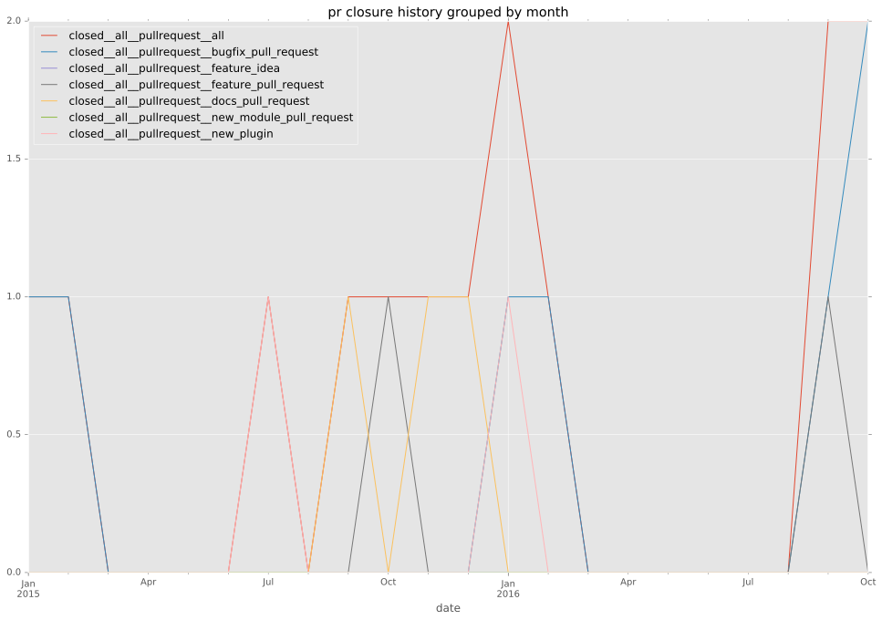

authors
- usawa
maintainers
- ansible
contributors
- usawa : 39 commits
- bcoca : 3 commits
- machacekondra : 8 commits
- zigarn : 4 commits
- Mogztter : 4 commits
- colynn : 2 commits
total issue counts
feature pull request: 2
docs report: 2
pullrequest: 9
docs pull request: 2
bugfix pull request: 4
feature idea: 2
issue: 8
new plugin: 1
bug report: 4
issue history
pullrequest history


days open by issue type
bugfix pull request
count: 4
std: 13.8564064606
min: 0
max: 24
median: 12.0
mean: 12.0
all
count: 19
std: 109.819176203
min: 0
max: 326
median: 1.0
mean: 61.8421052632
pullrequest
count: 0
std: nan
min: nan
max: nan
median: nan
mean: nan
docs pull request
count: 4
std: 0.57735026919
min: 0
max: 1
median: 0.5
mean: 0.5
docs report
count: 2
std: 0.707106781187
min: 0
max: 1
median: 0.5
mean: 0.5
feature pull request
count: 3
std: 177.246532641
min: 19
max: 326
median: 19.0
mean: 121.333333333
feature idea
count: 1
std: nan
min: 183
max: 183
median: 183.0
mean: 183.0
issue
count: 0
std: nan
min: nan
max: nan
median: nan
mean: nan
new plugin
count: 2
std: 0.0
min: 271
max: 271
median: 271.0
mean: 271.0
bug report
count: 3
std: 20.2072594216
min: 0
max: 35
median: 0.0
mean: 11.6666666667
closures grouped by total days open